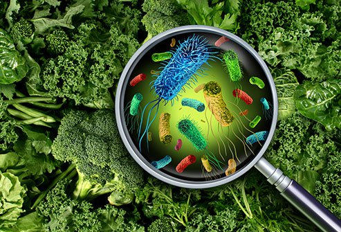
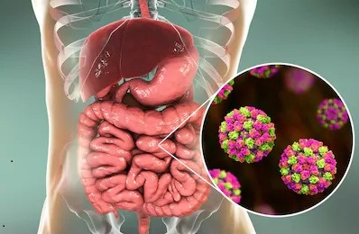
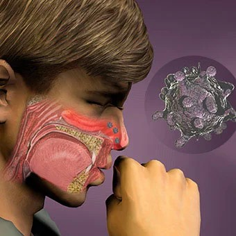
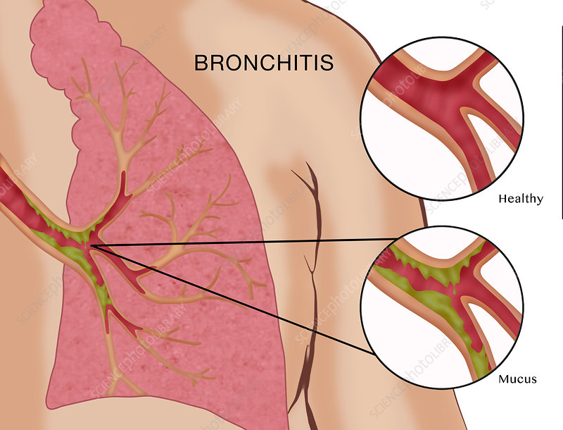

Coughing, sneezing and sore throat – and in the middle of summer!
All you need to know about the summer flu. And how best to treat it and protect yourself.
You get food poisoning by consuming food that’s contaminated by pathogens, such as viruses, bacteria, or parasites.If you have food poisoning, chances are it won’t go undetected. Symptoms can vary depending on the source of the infection. See more:
Although gastroenteritis is often referred to as the “stomach flu,” it’s not related to influenza. It’s often caused by a number of viruses, such as noroviruses or rotaviruses. See more:
The common cold is a viral infection of your nose and throat (upper respiratory tract). It's usually harmless, although it might not feel that way. Many types of viruses can cause a common cold. See more:
Bronchitis is an inflammation of the bronchial tubes in your lungs. Like pneumonia, bronchitis can sometimes be caused by the flu virus. See more:
Food poisoning, also called foodborne illness, is illness caused by eating contaminated food. Infectious organisms — including bacteria, viruses and parasites — or their toxins are the most common causes of food poisoning. Infectious organisms or their toxins can contaminate food at any point of processing or production. Contamination can also occur at home if food is incorrectly handled or cooked. Food poisoning symptoms, which can start within hours of eating contaminated food, often include nausea, vomiting or diarrhea. Most often, food poisoning is mild and resolves without treatment. But some people need to go to the hospital.
Food poisoning symptoms vary with the source of contamination. Most types of food poisoning cause one or more of the following signs and symptoms: 
Contamination of food can happen at any point of production: growing, harvesting, processing, storing, shipping or preparing. Cross-contamination — the transfer of harmful organisms from one surface to another — is often the cause. This is especially troublesome for raw, ready-to-eat foods, such as salads or other produce. Because these foods aren't cooked, harmful organisms aren't destroyed before eating and can cause food poisoning. Many bacterial, viral or parasitic agents cause food poisoning. The following table shows some of the possible contaminants, when you might start to feel symptoms and common ways the organism is spread
Food poisoning can usually be treated at home, and most cases will resolve within three to five days. If you have food poisoning, it’s crucial to remain properly hydrated. Sports drinks high in electrolytes can be helpful with this. Fruit juice and coconut water can restore carbohydrates and help with fatigue. Avoid caffeine, which may irritate the digestive tract. Decaffeinated teas with soothing herbs like chamomile, peppermint, and dandelion may calm an upset stomach. Read about more remedies for an upset stomach. Over-the-counter medications like Imodium and Pepto-Bismol can help control diarrhea and suppress nausea. However, you should check with your doctor before using these medications, as the body uses vomiting and diarrhea to rid the system of the toxin. Also, using these medications could mask the severity of the illness and cause you to delay seeking expert treatment. It’s also important for those with food poisoning to get plenty of rest. In severe cases of food poisoning, individuals may require hydration with intravenous (IV) fluids at a hospital. In the very worst cases of food poisoning, a longer hospitalization may be required while the individual recovers.
Viral gastroenteritis is an intestinal infection marked by watery diarrhea, abdominal cramps, nausea or vomiting, and sometimes fever. The most common way to develop viral gastroenteritis — often called stomach flu —is through contact with an infected person or by ingesting contaminated food or water. If you're otherwise healthy, you'll likely recover without complications. But for infants, older adults and people with compromised immune systems, viral gastroenteritis can be deadly. There's no effective treatment for viral gastroenteritis, so prevention is key. In addition to avoiding food and water that may be contaminated, thorough and frequent hand-washings are your best defense.
Although it's commonly called stomach flu, gastroenteritis isn't the same as influenza. Real flu (influenza) affects only your respiratory system — your nose, throat and lungs. Gastroenteritis, on the other hand, attacks your intestines, causing signs and symptoms, such as: 
The most common cause of gastroenteritis is a virus. Gastroenteritis flu can be caused by many different kinds of viruses. The main types are rotavirus and norovirus. Rotavirus is the world's most common cause of diarrhea in infants and young children. Norovirus is the most common cause of serious gastroenteritis and also foodborne disease outbreaks in the U.S. Although not as common, bacteria such as E. coli and salmonella can also trigger the stomach flu. Salmonella and campylobacter bacteria are the most common bacterial causes of gastroenteritis in the U.S. and are usually spread by undercooked poultry, eggs, or poultry juices. Salmonella can also be spread through pet reptiles or live poultry.
During gastroenteritis, it is important to eat as normally as possible. In fact, eating helps the lining of the intestine to heal quickly and allows the body to regain strength. On the contrary, not eating prolongs diarrhea. Start by eating small amounts of food. Then, gradually increase quantities depending on your appetite and the improvement of your condition. Make sure you rehydrate well by drinking water or a rehydration solution preferably, especially if you cannot eat. If your child is breast or bottle-fed, he or she can continue drinking his or her regular milk, without diluting it. Offer it more often, in small quantities.
The common cold is a viral infection of your nose and throat (upper respiratory tract). It's usually harmless, although it might not feel that way. Many types of viruses can cause a common cold. Children younger than 6 are at greatest risk of colds, but healthy adults can also expect to have two or three colds annually. Most people recover from a common cold in a week or 10 days. Symptoms might last longer in people who smoke. If symptoms don't improve, see your doctor.
Symptoms of a common cold usually appear one to three days after exposure to a cold-causing virus. Signs and symptoms, which can vary from person to person, might include: 
Although many types of viruses can cause a common cold, rhinoviruses are the most common culprit. A cold virus enters your body through your mouth, eyes or nose. The virus can spread through droplets in the air when someone who is sick coughs, sneezes or talks. It also spreads by hand-to-hand contact with someone who has a cold or by sharing contaminated objects, such as utensils, towels, toys or telephones. If you touch your eyes, nose or mouth after such contact or exposure, you're likely to catch a cold.
The tickle of an impending cold is all too familiar and can cause the desperate need to down glasses of orange juice and use lots of hand sanitizer. Unfortunately, if your throat is already tingling or scratchy, it’s likely one of the 200 strains of the common cold virus — most commonly the rhinovirusTrusted Source — has already settled in for the next 7 to 10 days.Dr. Doug Nunamaker, a family practice physician and chief medical officer forAtlas MD, explains that it’s in these first days of a cold that most people don’t do enough to care for their symptoms. Though there are a number of over-the-counter (OTC) treatments and remedies that can ease the symptoms of a cold during this stage, Nunamaker also suggests reaching for one of the most common dishes for people with a cold or flu: chicken noodle soup. “It’s easy on the stomach, soothes the throat, [and] provides fluid for hydration,” he explains. If you have a fever or are sweating, he adds, chicken soup can also help replenish some of the salt your body might lose. In terms of contagion levels, Nunamaker says your cold is contagious if you present “active symptoms.” So, the tickle in your throat, runny nose, body aches, and even low-grade fever mean you’re at risk of spreading the bug to everyone around you.
Bronchitis is an inflammation of the lining of your bronchial tubes, which carry air to and from your lungs. People who have bronchitis often cough up thickened mucus, which can be discolored. Bronchitis may be either acute or chronic. Often developing from a cold or other respiratory infection, acute bronchitis is very common. Chronic bronchitis, a more serious condition, is a constant irritation or inflammation of the lining of the bronchial tubes, often due to smoking. Acute bronchitis, also called a chest cold, usually improves within a week to 10 days without lasting effects, although the cough may linger for weeks. However, if you have repeated bouts of bronchitis, you may have chronic bronchitis, which requires medical attention. Chronic bronchitis is one of the conditions included in chronic obstructive pulmonary disease (COPD).
For either acute bronchitis or chronic bronchitis, signs and symptoms may include: 
Acute bronchitis is usually caused by viruses, typically the same viruses that cause colds and flu (influenza). Antibiotics don't kill viruses, so this type of medication isn't useful in most cases of bronchitis. The most common cause of chronic bronchitis is cigarette smoking. Air pollution and dust or toxic gases in the environment or workplace also can contribute to the condition.
In acute bronchitis, cells that line the bronchi become infected. The infection usually starts in the nose or throat and travels to the bronchial tubes. When the body tries to fight the infection, it causes the bronchial tubes to swell. This causes you to cough. Sometimes it is a dry cough, but often you will cough up mucus (sputum). The inflammation also causes less air to be able to move through the bronchial tubes, which can cause wheezing, chest tightness and shortness of breath. Eventually, the immune system fights off the infection. Acute bronchitis usually lasts for 3-10 days. However, your cough and mucus (sputum) production can last for several weeks after the infection has cleared.